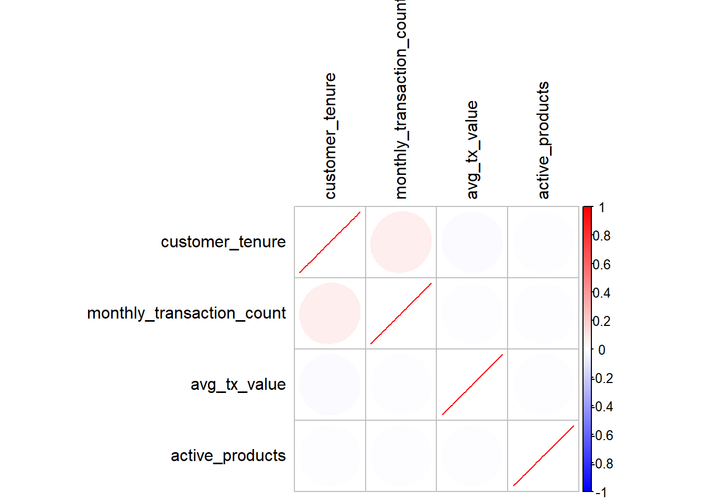
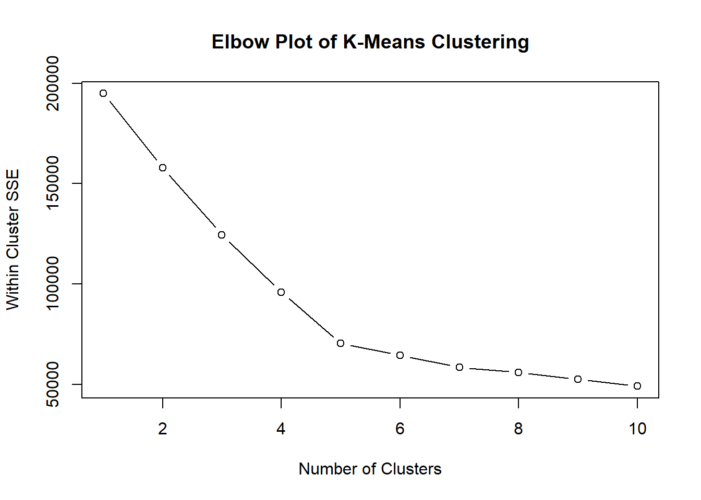
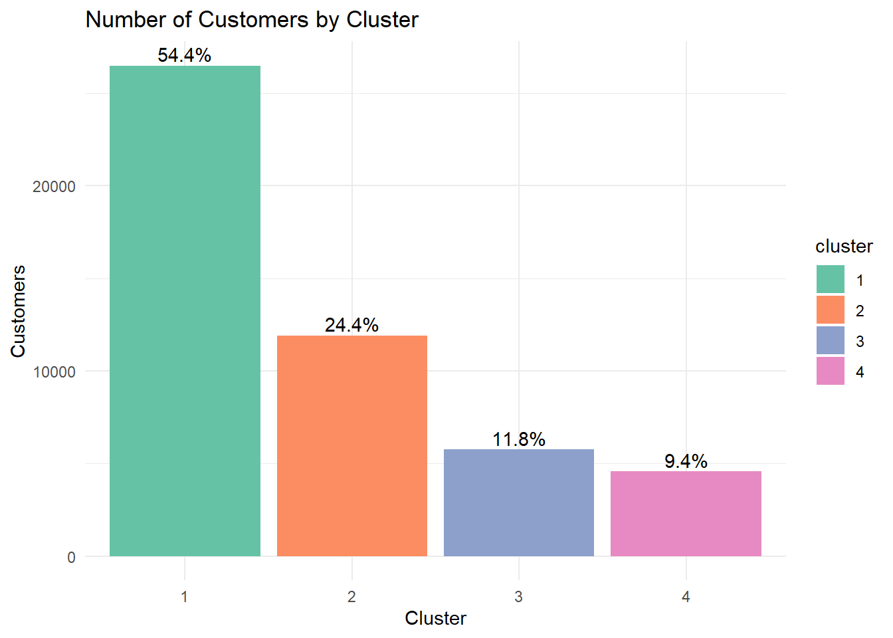
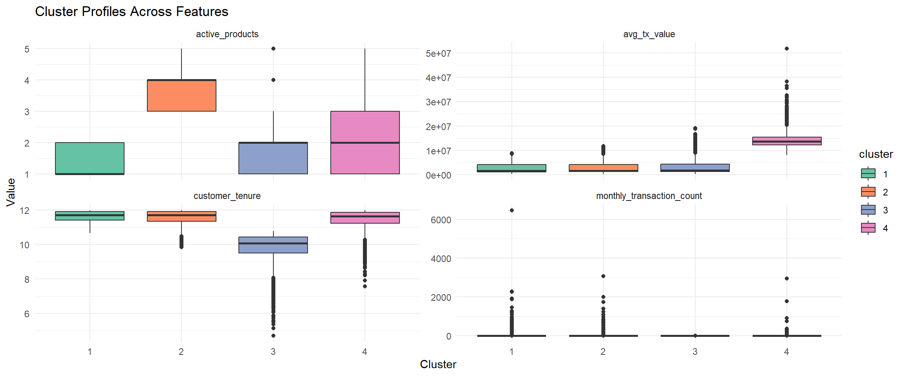

pacman::p_load(tidyverse, cluster , GGally, corrplot, patchwork, knitr)Take-home_EX02
1. Load Libraries
The following packages are used:
| Packages | Purpose |
|---|---|
| tidyverse. | Used for data manipulation, transformation, and visualisation. |
| cluster | Used for performing and evaluating cluster analysis. |
| GGally | Used for advanced exploratory data visualisations and variable relationship plots. |
| corrplot | Used for visualising correlation matrices. |
| patchwork | Used for arranging multiple plots into a single layout. |
| knitr | Used for generating reproducible reports by integrating code, output, and text. |
2. The Data
2.1 Load Data
customer <- read_csv('Data/customer_data.csv')
transaction <- read_csv('Data/transactions_data.csv')
skimr::skim(customer)| Name | customer |
| Number of rows | 48723 |
| Number of columns | 54 |
| _______________________ | |
| Column type frequency: | |
| character | 13 |
| Date | 5 |
| logical | 7 |
| numeric | 29 |
| ________________________ | |
| Group variables | None |
Variable type: character
| skim_variable | n_missing | complete_rate | min | max | empty | n_unique | whitespace |
|---|---|---|---|---|---|---|---|
| gender | 0 | 1.00 | 4 | 6 | 0 | 3 | 0 |
| location | 0 | 1.00 | 12 | 26 | 0 | 18 | 0 |
| income_bracket | 0 | 1.00 | 3 | 9 | 0 | 4 | 0 |
| occupation | 0 | 1.00 | 4 | 19 | 0 | 35 | 0 |
| education_level | 0 | 1.00 | 3 | 11 | 0 | 4 | 0 |
| marital_status | 0 | 1.00 | 6 | 8 | 0 | 4 | 0 |
| acquisition_channel | 0 | 1.00 | 7 | 11 | 0 | 4 | 0 |
| customer_segment | 0 | 1.00 | 5 | 10 | 0 | 4 | 0 |
| feedback_sentiment | 0 | 1.00 | 7 | 8 | 0 | 3 | 0 |
| feature_requests | 16115 | 0.67 | 13 | 47 | 0 | 25 | 0 |
| complaint_topics | 24346 | 0.50 | 4 | 18 | 0 | 5 | 0 |
| clv_segment | 0 | 1.00 | 4 | 8 | 0 | 4 | 0 |
| preferred_transaction_type | 0 | 1.00 | 7 | 10 | 0 | 4 | 0 |
Variable type: Date
| skim_variable | n_missing | complete_rate | min | max | median | n_unique |
|---|---|---|---|---|---|---|
| first_tx | 0 | 1 | 2023-01-04 | 2023-08-10 | 2023-01-14 | 180 |
| last_tx | 0 | 1 | 2023-05-11 | 2023-12-29 | 2023-12-19 | 174 |
| last_survey_date | 0 | 1 | 2023-01-01 | 2023-12-31 | 2023-07-03 | 365 |
| last_transaction_date | 0 | 1 | 2023-05-11 | 2023-12-29 | 2023-12-19 | 174 |
| first_transaction_date | 0 | 1 | 2023-01-04 | 2023-08-10 | 2023-01-14 | 180 |
Variable type: logical
| skim_variable | n_missing | complete_rate | mean | count |
|---|---|---|---|---|
| savings_account | 0 | 1 | 0.79 | TRU: 38459, FAL: 10264 |
| credit_card | 0 | 1 | 0.63 | TRU: 30460, FAL: 18263 |
| personal_loan | 0 | 1 | 0.32 | FAL: 33321, TRU: 15402 |
| investment_account | 0 | 1 | 0.43 | FAL: 27985, TRU: 20738 |
| insurance_product | 0 | 1 | 0.21 | FAL: 38388, TRU: 10335 |
| bill_payment_user | 0 | 1 | 0.70 | TRU: 34170, FAL: 14553 |
| auto_savings_enabled | 0 | 1 | 0.40 | FAL: 29173, TRU: 19550 |
Variable type: numeric
| skim_variable | n_missing | complete_rate | mean | sd | p0 | p25 | p50 | p75 | p100 | hist |
|---|---|---|---|---|---|---|---|---|---|---|
| customer_id | 0 | 1.00 | 55027986.01 | 2.592111e+07 | 10000617.00 | 32708345.50 | 55174470.00 | 77242332.00 | 9.999980e+07 | ▇▇▇▇▇ |
| age | 0 | 1.00 | 44.54 | 1.228000e+01 | 29.00 | 30.00 | 45.00 | 59.00 | 6.000000e+01 | ▇▁▇▁▇ |
| household_size | 0 | 1.00 | 3.50 | 1.580000e+00 | 1.00 | 2.00 | 3.00 | 4.00 | 1.300000e+01 | ▇▅▂▁▁ |
| active_products | 0 | 1.00 | 2.10 | 1.180000e+00 | 1.00 | 1.00 | 2.00 | 3.00 | 5.000000e+00 | ▇▆▃▂▁ |
| app_logins_frequency | 0 | 1.00 | 22.38 | 1.175000e+01 | 4.00 | 15.00 | 22.00 | 30.00 | 1.000000e+02 | ▇▅▁▁▁ |
| feature_usage_diversity | 0 | 1.00 | 2.37 | 1.740000e+00 | 0.00 | 1.00 | 2.00 | 4.00 | 1.000000e+01 | ▇▅▂▁▁ |
| credit_utilization_ratio | 18263 | 0.63 | 0.29 | 1.600000e-01 | 0.00 | 0.16 | 0.27 | 0.39 | 9.400000e-01 | ▆▇▅▁▁ |
| international_transactions | 0 | 1.00 | 0.49 | 7.000000e-01 | 0.00 | 0.00 | 0.00 | 1.00 | 6.000000e+00 | ▇▁▁▁▁ |
| failed_transactions | 0 | 1.00 | 0.20 | 4.400000e-01 | 0.00 | 0.00 | 0.00 | 0.00 | 4.000000e+00 | ▇▂▁▁▁ |
| tx_count | 0 | 1.00 | 64.84 | 6.119300e+02 | 10.00 | 12.00 | 18.00 | 35.00 | 7.746500e+04 | ▇▁▁▁▁ |
| avg_tx_value | 0 | 1.00 | 3564851.69 | 3.959443e+06 | 318215.00 | 1339114.49 | 1763107.41 | 4658536.36 | 5.167030e+07 | ▇▁▁▁▁ |
| total_tx_volume | 0 | 1.00 | 257472847.91 | 6.211110e+09 | 3182150.00 | 20158450.00 | 48081150.00 | 120445000.00 | 1.073087e+12 | ▇▁▁▁▁ |
| base_satisfaction | 0 | 1.00 | 8.00 | 1.000000e+00 | 4.25 | 7.33 | 8.01 | 8.68 | 1.194000e+01 | ▁▃▇▂▁ |
| tx_satisfaction | 0 | 1.00 | 0.18 | 2.200000e-01 | 0.05 | 0.06 | 0.09 | 0.17 | 1.000000e+00 | ▇▁▁▁▁ |
| product_satisfaction | 0 | 1.00 | 0.47 | 2.300000e-01 | 0.00 | 0.40 | 0.40 | 0.60 | 1.000000e+00 | ▆▇▇▃▁ |
| satisfaction_score | 0 | 1.00 | 4.16 | 5.800000e-01 | 2.00 | 4.00 | 4.00 | 5.00 | 6.000000e+00 | ▁▁▇▃▁ |
| nps_score | 0 | 1.00 | -26.76 | 1.256000e+01 | -80.00 | -34.00 | -28.00 | -19.00 | 2.300000e+01 | ▁▂▇▃▁ |
| support_tickets_count | 0 | 1.00 | 1.00 | 1.000000e+00 | 0.00 | 0.00 | 1.00 | 2.00 | 7.000000e+00 | ▇▂▁▁▁ |
| resolved_tickets_ratio | 0 | 1.00 | 0.51 | 4.800000e-01 | 0.00 | 0.00 | 0.50 | 1.00 | 1.000000e+00 | ▇▁▁▁▇ |
| app_store_rating | 0 | 1.00 | 4.16 | 5.900000e-01 | 2.00 | 4.00 | 4.00 | 4.50 | 5.000000e+00 | ▁▁▃▆▇ |
| monthly_transaction_count | 0 | 1.00 | 5.77 | 5.097000e+01 | 1.00 | 1.60 | 2.00 | 3.09 | 6.455420e+03 | ▇▁▁▁▁ |
| average_transaction_value | 0 | 1.00 | 3564851.69 | 3.959443e+06 | 318215.00 | 1339114.49 | 1763107.41 | 4658536.36 | 5.167030e+07 | ▇▁▁▁▁ |
| total_transaction_volume | 0 | 1.00 | 257472847.91 | 6.211110e+09 | 3182150.00 | 20158450.00 | 48081150.00 | 120445000.00 | 1.073087e+12 | ▇▁▁▁▁ |
| transaction_frequency | 0 | 1.00 | 0.19 | 1.700000e+00 | 0.03 | 0.04 | 0.06 | 0.10 | 2.157800e+02 | ▇▁▁▁▁ |
| weekend_transaction_ratio | 0 | 1.00 | 0.28 | 1.000000e-01 | 0.00 | 0.21 | 0.28 | 0.34 | 9.100000e-01 | ▂▇▂▁▁ |
| avg_daily_transactions | 0 | 1.00 | 0.19 | 1.700000e+00 | 0.03 | 0.04 | 0.06 | 0.10 | 2.157800e+02 | ▇▁▁▁▁ |
| customer_tenure | 0 | 1.00 | 11.37 | 7.200000e-01 | 4.70 | 11.17 | 11.63 | 11.87 | 1.197000e+01 | ▁▁▁▁▇ |
| churn_probability | 0 | 1.00 | 0.34 | 7.000000e-02 | 0.11 | 0.30 | 0.35 | 0.39 | 5.000000e-01 | ▁▂▆▇▂ |
| customer_lifetime_value | 0 | 1.00 | 328159670.79 | 7.926224e+08 | 0.00 | 58414383.33 | 129681954.23 | 297355900.21 | 1.776860e+10 | ▇▁▁▁▁ |
2.2 Data Prep
2.2.1 Feature selection & Scaling
The variables selected for K-means clustering were chosen to minimise redundancy by ensuring that no pair of variables exhibits a high correlation (greater than 0.8).
These four variables were retained because they provide a balanced representation of key customer behaviours that are likely to differentiate customer segments.
Features selected: monthly_transaction_count, avg_tx_value, active_products, customer_tenure
Code
features <- c("monthly_transaction_count",
"avg_tx_value",
"active_products",
"customer_tenure")
fin.data <- customer %>%
select(all_of(features))
scaled_features <- scale(fin.data)
fin.cor <- cor(fin.data, use = "complete.obs")
corrplot(
fin.cor,
method = "ellipse",
order = "AOE",
col = colorRampPalette(c("blue", "white", "red"))(200),
tl.col = "black"
)
3 The Model
3.1 Feeding the model
3.1.1 Running the Elbow Plot
The elbow plot is run to allow use to narrow down to the number of cluster that potentially give us the better separation.
Code
# set up no. of max clusters to run
n = 10
# Create empty list
wcss <- numeric(n)
# Create loop and extract SSW into list
set.seed(888)
for (k in 1:n) {
km <- kmeans(scaled_features, centers = k, nstart = 10,
iter.max = 200, algorithm = "Lloyd")
wcss[k] <- km$tot.withinss
}
plot(1:n, wcss, type = "b",
xlab = "Number of Clusters",
ylab = "Within Cluster SSE",
main = "Elbow Plot of K-Means Clustering")
3.1.2 Running the Kmeans model
From the elbow plot the ideal number of clusters are set to be between 3-5.
Although k = 5 produced a slightly higher silhouette score, the fifth cluster contained only 24 observations, indicating poor stability. Therefore k = 4 was selected as it provides a balance between cluster quality and interpretability.
To allow for better explainability, PCA is not applied in the model.
We are using Lloyd algorithm as it is more stable for larger data-set.
Code
# Run k means based on n clusters
kmeans_model <- kmeans(scaled_features, centers = 4, nstart = 10, iter.max = 200, algorithm = "Lloyd")
# Assign labels back to original data
customer$cluster <- factor(kmeans_model$cluster)
# Assign cluster to count size to prevent shifting
cluster_order <- customer %>%
count(cluster) %>%
arrange(desc(n)) %>%
mutate(new_cluster = row_number())
customer <- customer %>%
left_join(cluster_order %>% select(cluster, new_cluster),
by = "cluster") %>%
mutate(cluster = factor(new_cluster)) %>%
select(-new_cluster)4 Performance Evaluation
Overall Performance Summary:
| K Clusters | Silhouette | Variance Explained |
|---|---|---|
| 3 | 0.3907 | 0.36 |
| 4 | 0.4272 | 0.49 |
| 5* | 0.4308 | 0.64 |
*Cluster of 5 is not selected as the 5th cluster is only with 24 members which is too small.
4.1 Silhouette
Silhouette measures how well each observation fits within its assigned cluster as compare to other clusters.
Silhouette value is between -1 and 1.
• Close to 1 → well separated
• Around 0 → overlapping clusters
• Negative → likely misclassified
Code
sil <- silhouette(kmeans_model$cluster,
dist(scaled_features))
cat("Silouette:", mean(sil[,"sil_width"]))Silouette: 0.42724074.2 Variance Explained
The proportion of variance explained is computed as the ratio of between-cluster sum of squares to total sum of squares.
Variance explained measures the proportion of total variation in the dataset that is captured by the clustering structure.
The value ranges from 0 to 1, where higher values indicate greater separation between clusters.
Clusters Distributions
Code
# Calculate number of observations in each cluster.
cluster_size <- table(customer$cluster)
cluster_size
1 2 3 4
26486 11910 5756 4571 Code
# Calculate between-cluster Sum of Squares
btwn_clus <- kmeans_model$betweenss
# Calculate total Sum of Squares
tss <- kmeans_model$totss
# Proportion of total variance explained by clustering
var_exp <- (kmeans_model$betweenss / kmeans_model$totss)
cat(sprintf("Between-cluster SS: %.2f\n", btwn_clus))Between-cluster SS: 96082.95Code
cat(sprintf("Total SE: %.2f\n", tss))Total SE: 194888.00Code
cat(sprintf("Proportion of variance explained: %.2f\n", var_exp))Proportion of variance explained: 0.495 The Clusters
5.1 Cluster size
4 clusters were selected as:
It is able to explain the variance as compared to 5 clusters
The feature are more differentiated
Code
cluster_size <- customer %>%
count(cluster) %>%
mutate(pct = n / sum(n))
p1 <- ggplot(cluster_size,
aes(x = cluster, y = n, fill = cluster)) +
geom_col() +
scale_fill_brewer(palette = "Set2") +
geom_text(
aes(label = scales::percent(pct, accuracy = 0.1)),
vjust = -0.3
) +
theme_minimal() +
labs(title = "Number of Customers by Cluster",
x = "Cluster",
y = "Customers")
p1
5.2 Cluster Characteristics
5.2.1 Parallel plot
Code
# Group of feature mean by clusters
cluster_mean <- customer %>%
group_by(cluster) %>%
summarise(across(c(all_of(features)),
mean))
# Plot parallel plot
p2 <- ggparcoord(cluster_mean,
columns = 2:ncol(cluster_mean),
groupColumn = "cluster",
scale = "uniminmax") +
geom_line(linewidth = 1.5) +
geom_point(size = 2) +
labs(title = "Parallel plot by clusters mean") +
scale_color_brewer(palette = "Set2", guide = guide_legend(reverse = FALSE))+
theme_minimal()
p2
5.2.2 Boxplot of Selected features
Code
customer_piv <- customer %>%
select(cluster,
all_of(features)) %>%
pivot_longer(-cluster,
names_to = "feature",
values_to = "value")
p3 <- ggplot(customer_piv,
aes(x = cluster,
y = value,
fill = cluster)) +
geom_boxplot() +
facet_wrap(~ feature,
scales = "free_y") +
scale_fill_brewer(palette = "Set2") +
theme_minimal() +
labs(title = "Cluster Profiles Across Features",
x = "Cluster",
y = "Value")
p3
5.2.3 Median by Cluster Group
Code
cluster_median <- customer %>%
group_by(cluster) %>%
summarise(across(all_of(features), median))
cluster_median %>%
kable(caption = "Median Feature Values by Cluster")| cluster | monthly_transaction_count | avg_tx_value | active_products | customer_tenure |
|---|---|---|---|---|
| 1 | 2.100000 | 1675191 | 1 | 11.70000 |
| 2 | 2.095455 | 1678361 | 4 | 11.70000 |
| 3 | 1.666667 | 1725881 | 2 | 10.06667 |
| 4 | 2.000000 | 13719926 | 2 | 11.63333 |
5.2.4 Detailed Cluster Comparison
The clusters can be differentiated by the characteristics below:
| Cluster | Segment Type | Characteristics |
|---|---|---|
| 1 | Active Low Value and Long Term Customer |
|
| 2 | Multi-product Low Value and Long Term Customer |
|
| 3 | New and Low Value Customer |
|
| 4 | Premium Customer: Moderately Active and High Value |
|
5.3 Clusters Summary
The Key features for the cluster can be summarised by the Heatmap:
Code
# Normalise fetaure to scale of 0 to 1
cluster_normalised <- cluster_median %>%
mutate(across(-cluster, ~ (. - min(.)) / (max(.) - min(.))))
# Make tabular format
cluster_long <- cluster_normalised %>%
pivot_longer(-cluster,
names_to = "feature",
values_to = "value")
ggplot(cluster_long,
aes(x = feature,
y = cluster,
fill = value)) +
geom_tile(color = "white") +
scale_fill_gradientn(
colours = c("#e5f5f9", "#99d8c9", "#2ca25f")
)+
theme_minimal() +
labs(title = "Cluster Feature Heatmap",
x = "Customer Behaviour Features",
y = "Cluster",
fill = "Relative Intensity")
The 4 clusters are summarized as below:
Cluster 1: Active Low Value and Long Term Customer
Cluster 2: Multi-product Low Value and Long Term Customer
Cluster 3: New and Low Value Customer
Cluster 4: Premium Customer: Moderately Active and High Value
References:
Kam, Tin Seong. (2025).6 Visual Correlation Analysis – R for Visual Analytics. (2023, December 4). Netlify.app. https://r4va.netlify.app/chap06
Kam, Tin Seong. (2025).15 Visual Multivariate Analysis with Parallel Coordinates Plot – R for Visual Analytics. (2023, December 4). Netlify.app. https://r4va.netlify.app/chap15
Kam, Tin Seong. (2025).16 Treemap Visualisation with R – R for Visual Analytics. (2023, December 4). Netlify.app. https://r4va.netlify.app/chap16
Heat map in ggplot2. (2021, November 2). R CHARTS | a Collection of Charts and Graphs Made with the R Programming Language. https://r-charts.com/correlation/heat-map-ggplot2/